REALIDADE AUMENTADA COM IOT
O QUE É REALIDADE AUMENTADA (RA)?
Sobreposição inteligente de elementos virtuais no campo de visão físico em tempo real.
Ao contrário da Realidade Virtual (RV) — que isola completamente o usuário em um ambiente 100% artificial —, a Realidade Aumentada (RA) preserva o mundo real, adicionando gráficos, telemetria e interfaces 3D diretamente na linha de visão.
Câmeras e sensores de profundidade escaneiam a geometria do espaço em milissegundos via SLAM (Mapeamento e Localização Simultâneos). Isso permite ancorar hologramas com precisão milimétrica e física realista sobre qualquer superfície.
Manuais técnicos, diagramas de circuitos e alertas críticos aparecem flutuando sobre o equipamento, permitindo que o operador execute tarefas complexas sem soltar ferramentas.
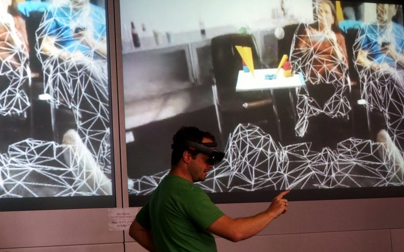
Sensores ópticos e computação visual escaneiam o ambiente físico em 3D para ancorar dados exatamente onde a ação acontece.
O QUE É INTERNET DAS COISAS (IoT)?
A infraestrutura que conecta equipamentos físicos e sensores a redes inteligentes de telemetria.
Transdutores físicos medem variáveis críticas de operação 24 horas por dia: temperatura, vibração triaxial (acelerômetros), pressão, corrente elétrica e vazão em tempo real diretamente nos componentes mecânicos.
Os módulos transmitem telemetria instantânea através de redes industriais como 5G privativo, MQTT, Wi-Fi 6 e LoRaWAN, garantindo dados com latência inferior a 15 milissegundos sem sobrecarregar a largura de banda.
Processadores na borda da máquina (Edge Computing) detectam anomalias térmicas e mecânicas antes da quebra, disparando manutenções preventivas e desligamentos de emergência automatizados.
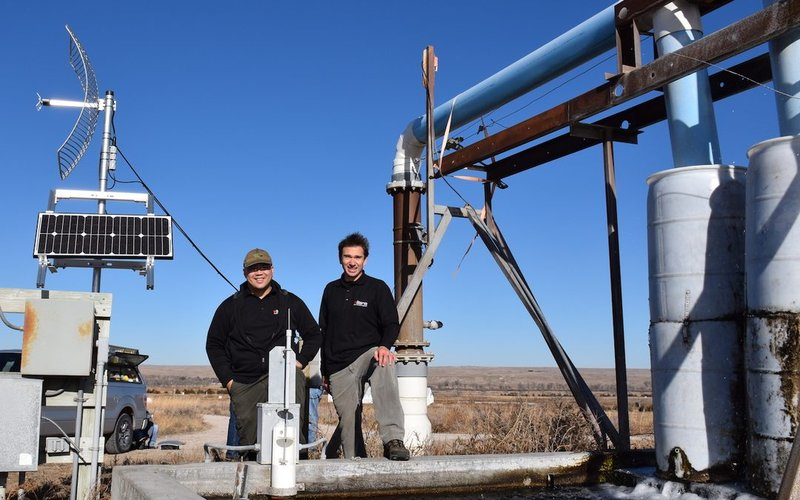
Sensores sem fio de alta precisão instalados em eixos e turbinas coletando dados de vibração e calor em regime contínuo 24/7.
A FUSÃO: QUANDO RA ENCONTRA A IOT
O invisível se torna visível: o dado do sensor sai da tela do computador e vai para o objeto real.
Silos de Informação e Desconexão Física
O operador inspeciona o maquinário, mas os dados vitais estão isolados em telas de controle distantes ou em tablets que ocupam as mãos, gerando atraso de resposta e risco operacional.
Visão Holográfica em Tempo Real
Com óculos de RA, a telemetria do sensor IoT (temperatura, vibração, rotação) surge ancorada exatamente no componente físico, com alertas cromáticos imediatos de perigo.
- Mãos 100% livres: O técnico manuseia ferramentas enquanto consulta dados ao vivo.
- Diagnóstico em segundos: Identificação visual de superaquecimento ou vibração sem desmontagens cegas.
*Clique nos botões para simular diferentes condições climáticas e operacionais.
ONDE ESSA COMBINAÇÃO JÁ É USADA NO MUNDO?
Aplicações consolidadas em setores críticos que exigem precisão absoluta e dados em tempo real.
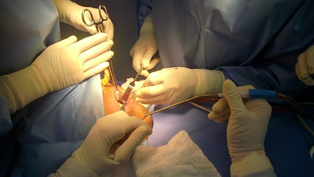
Medicina & Cirurgias
Monitores cardíacos e biosensores IoT transmitem sinais vitais direto para o visor do cirurgião. Modelos 3D de tomografia são alinhados ao corpo do paciente durante a incisão.
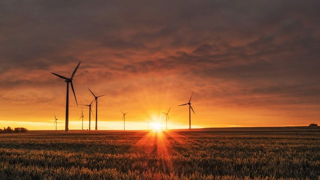
Energia & Turbinas
Inspeção de aerogeradores a mais de 100 metros de altitude. O técnico visualiza rotação, vibração mecânica e temperatura dos rolamentos sem abrir a carcaça blindada.
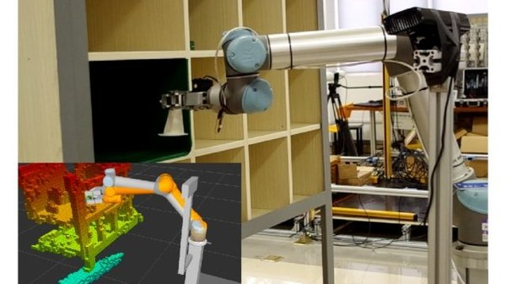
Logística & Armazéns
Sistemas Pick-by-Vision: rotas dinâmicas projetadas no campo de visão guiam o operador até o item exato. Leitores RFID e sensores IoT validam a separação instantaneamente.
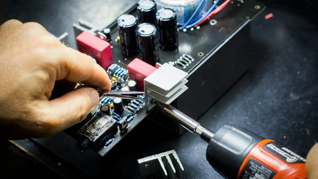
Indústria 4.0
Linhas de produção automotiva e robótica. Sensores industriais IoT e óculos de RA garantem que cada etapa e montagem mecânica siga os parâmetros ideais.
CASOS REAIS DE GRANDES EMPRESAS
Exemplos comprovados de corporações globais operando com ganhos massivos de produtividade.
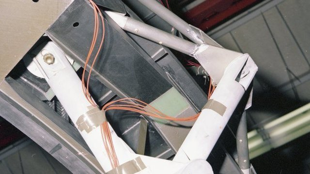
Chicotes de Fiação Aeronáutica
Com mais de 200 km de cabos por aeronave, a montagem era guiada por manuais gigantescos. Com óculos de RA sincronizados a torquímetros IoT conectados:
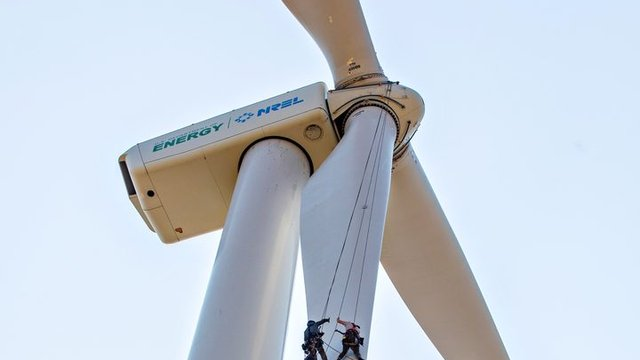
Inspeção de Turbinas Eólicas e a Gás
Técnicos realizam vistorias a 100 metros usando óculos de RA que recebem telemetria de vibração e temperatura dos sensores da turbina em tempo real.
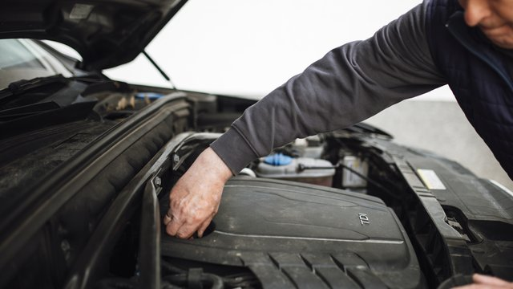
Suporte Remoto e Gêmeos Digitais
Mecânicos conectam carros à central IoT e usam RA para suporte remoto com engenheiros da matriz, que desenham indicações holográficas sobre o motor físico.
O ARSENAL DE HARDWARE: ÓCULOS DE RA ATUAIS
Dispositivos comerciais e industriais que tornam a visualização holográfica de telemetria real.
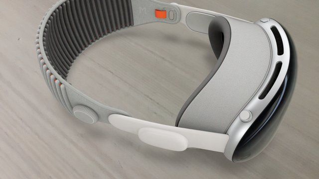
Computação Espacial
Telas Micro-OLED duplas com resolução 4K por olho, sensores LiDAR e chip R1 dedicado para vídeo passthrough em 12ms.
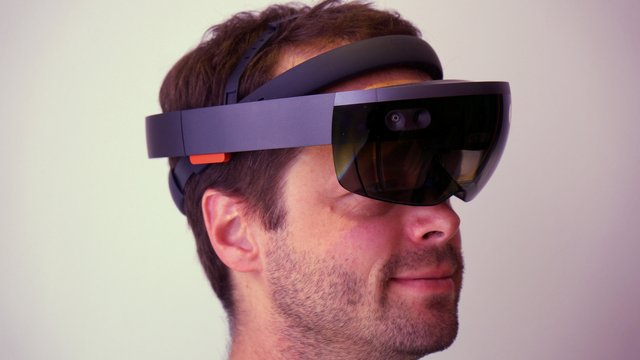
Padrão da Indústria 4.0
Visão ótica transparente (Waveguide) com visor basculante. Utilizado por Boeing, Exército e hospitais conectado ao Azure IoT.
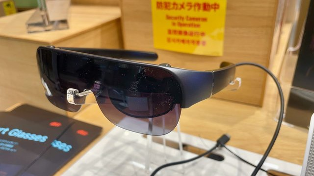
Óculos com IA Integrada
Armação ultraleve comum (<50g) com câmeras, áudio direcional e IA multimodal para leitura de códigos e assistência por voz.
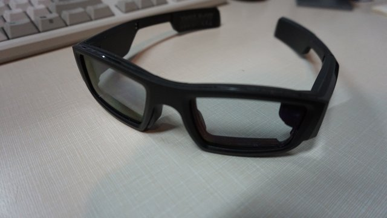
Displays Micro-OLED Leves
Pesam menos de 75 gramas, conectam via USB-C a celulares e projetam uma tela virtual flutuante gigante de telemetria IoT.
VANTAGENS ESTRATÉGICAS DE UNIR RA + IOT
Por que governos e empresas investem bilhões nessa combinação?
Tomada de Decisão Instantânea
O operador não depende de suposições: o status e telemetria do equipamento são renderizados sobre o componente físico, eliminando latência de decisão.
Redução Drástica de Falhas Humanas
Instruções procedurais passo a passo ancoradas nas peças exatas evitam erros de montagem, torque inadequado ou conexões invertidas.
Segurança Ocupacional Preditiva
Sensores IoT detectam radiações térmicas, gases inflamáveis ou arcos voltaicos invisíveis a olho nu, e a RA projeta perímetros vermelhos de alerta antes da aproximação.
Curva de Treinamento Acelerada
Novos operadores são capacitados em situações simuladas hiper-realistas sobre maquinário real, sem risco de quebra de componentes críticos.
COMO ESSA TECNOLOGIA SERÁ USADA NO FUTURO?
A convergência entre visão espacial, IA generativa e conectividade 6G nos próximos anos.
Lentes de Contato Biônicas
Evolução dos óculos para microdisplays ópticos instalados na superfície da córnea, projetando telemetria e biometria com consumo mínimo de energia.
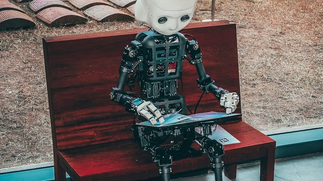
IA como Engenheiro Copiloto
Modelos de IA analisam telemetria IoT antes de qualquer falha mecânica e projetam guias holográficos interativos explicando como resolver o problema.
Cidades Inteligentes Vivas
Infraestrutura urbana, veículos autônomos e redes de energia transmitindo telemetria em 6G projetada diretamente nos visores de técnicos e pedestres.
Com 5G/6G, sensores IoT cada vez menores e processadores mais potentes, a fronteira entre o mundo físico e o digital tende a desaparecer.
HORA DA PRÁTICA
Peguem o celular: vamos colocar uma turbina inteligente na mesa de vocês.
Escaneie o QR Code
Abra a câmera do celular e aponte para o código ao lado.
Toque em "Ver na minha mesa"
Aponte para o chão ou para a mesa e mova o celular devagar.
Leia os sensores IoT
Temperatura, rotação, vibração e energia aparecem sobre a turbina em tempo real.
Troque os cenários
Alterne entre Chuva, Vento Forte, Superaquecimento, Calmaria e Freio de Emergência para ver a turbina reagir no seu espaço.
OBRIGADO
"O futuro já está diante dos nossos olhos."